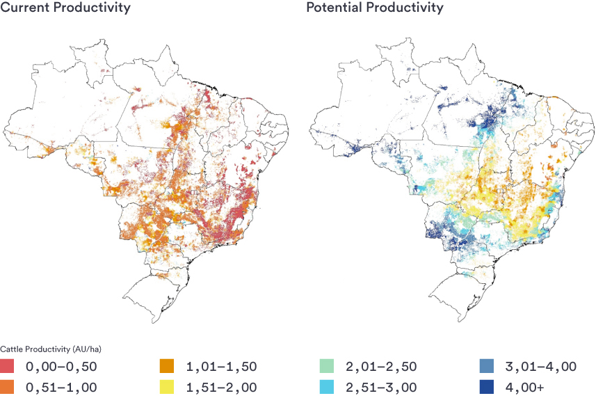

✕
FURTHER READING FROM CHAPTER 5
Back ←
Productive Capacity of Existing Pasture
According to Strassburg et al. 2014, the current productivity of Brazil’s 115 million hectares of cultivated pasturelands is only 32–34% of its potential; increasing productivity to 49–52% of the potential would suffice to meet demands for meat (as well as crops, wood products, and biofuels) until at least 2040, without further conversion of natural ecosystems.63 As a result up to 14.3 Gt CO2 Eq. could be mitigated.64
This means that the current productivity is estimated at 94 million animal units, but the total potential carrying capacity could be 274-293 million animal units, indicating a substantial potential to increase productivity.65 As described by Strassburg, et al. 2014, the current low productivity of Brazilian pasturelands is a result of the following:
1) low technology levels characterized by inadequate pasture management (overgrazing and lack of maintenance fertilization) leading to a widespread degradation and deficient animal management (health, nutrition and breeding) resulting in low animal performance;66
2) land speculation, where cattle ranching is a means to secure land ownership with an aim to sell it when the cropland frontier advances (in Brazil, farms that are not actively used can be expropriated for land reform, and extensive cattle ranching is among the simplest forms of demonstrating use);67
3) insecure land tenure, which discourages investments in increased productivity and incentivizes exploitation that leads to degradation68;
4) lack of long-term credit for the upfront costs of increasing productivity and lack of compliance of the properties with the environmental laws which prevents access to credit;69
5) lack of appropriate extension and training services dedicated to cattle ranch productivity.70
Current Productivity and Sustainable Carrying Capacity of Cultivated Pasturelands in Brazil62

Maps from Strassburg et al. 2014
Pasture degradation is one of the main causes of low productivity of cattle production systems and is a driving force behind deforestation and conversion of native ecosystems. Approximately, 50% of the total areas of cultivated pastures in the Cerrado71 and more than 60% in the Amazon biomes are considered degraded.72 In 2010, nearly 40% of the deforested land in the Amazon was either degraded pasture or abandoned areas.73
Moderate intensification and sustainable ranch management practices can provide potential solutions to help improve pasture and herd productivity. Efforts aimed at addressing the five underlying issues leading to low productivity (see above) can help mitigate the potential for pasture degradation and therefore reduce pressures to clear additional forests.
62. Strassburg, B. B. N., et al. 2014. When enough should be enough: Improving the use of current agricultural lands could meet production demands and spare natural habitats in Brazil. Global Environmental Change, Vol. 28, 84-87.
63. Strassburg, B. B. N., et al. 2014. When enough should be enough: Improving the use of current agricultural lands could meet production demands and spare natural habitats in Brazil. Global Environmental Change, Vol. 28, 84-87.
64. Strassburg, B. B. N., et al. 2014. When enough should be enough: Improving the use of current agricultural lands could meet production demands and spare natural habitats in Brazil. Global Environmental Change, Vol. 28, 84-87.
65. Strassburg, B. B. N., et al. 2014. When enough should be enough: Improving the use of current agricultural lands could meet production demands and spare natural habitats in Brazil. Global Environmental Change, Vol. 28, 84-87.
66. Strassburg, B. B. N., et al. 2014. When enough should be enough: Improving the use of current agricultural lands could meet production demands and spare natural habitats in Brazil. Global Environmental Change, Vol. 28, 84-87.
67. Strassburg, B. B. N., et al. 2014. When enough should be enough: Improving the use of current agricultural lands could meet production demands and spare natural habitats in Brazil. Global Environmental Change, Vol. 28, 84-87.
68. Strassburg, B. B. N., et al. 2014. When enough should be enough: Improving the use of current agricultural lands could meet production demands and spare natural habitats in Brazil. Global Environmental Change, Vol. 28, 84-87.
69. Strassburg, B. B. N., et al. 2014. When enough should be enough: Improving the use of current agricultural lands could meet production demands and spare natural habitats in Brazil. Global Environmental Change, Vol. 28, 84-87.
70. Strassburg, B. B. N., et al. 2014. When enough should be enough: Improving the use of current agricultural lands could meet production demands and spare natural habitats in Brazil. Global Environmental Change, Vol. 28, 84-87.